전자상거래운용사 (2011-04-09 기출문제)
1과목: 인터넷 일반
1. 다음 중에서 개인정보 보호를 위한 이용자 권리와 거리가 먼 것은?
- 이용자는 개인정보의 수집, 목적외 이용 등에 대한 동의를 언제든지 철회할 수 있다.
- 이용자는 자신의 개인정보의 내용, 범위, 정확성 등을 확인하고 오류가 있을 경우에는 정정을 요구할 수 있다
- 정보통신서비스제공자는 개인정보를 수집할 때 수집 및 이용 목적을 밝혀 이용자의 동의를 얻어야 한다.
- 일단 수집된 정보를 제3자에게 제공할 경우에는 별도의 이용자 동의가 필요없다.
(정답률: 77%)

2. 다음 중 CGI에 대한 설명으로 잘못된 것은?
- 웹 서버의 기능 확장을 위하여 TCP/IP 프로토콜을 확장한 것이다.
- HTML의 단점을 보완하고 동적 페이지를 제작할 수 있는 기술이다.
- 전송 방식에는 Post 방식과 Get 방식이 있다.
- HTML에 양방향성의 상호작용을 가능하게 한다.
(정답률: 55%)
3. 다음 중 인터넷 서비스를 이용할 때 갖추어야 할 기본적인 네티켓이 아닌 것은?
- 행운의 편지와 같은 메일을 불특정 다수에게 보낸다.
- 자료를 인용할 때는 출처를 밝히는 습관을 들인다.
- 유용한 정보와 자료는 공유하는 정신을 갖는다.
- 상대방의 다양성을 인정하도록 노력한다.
(정답률: 92%)
4. 다음 중 인터넷(Internet)의 특징으로 옳지 않은 것은?
- 시간과 공간의 제약 없이 원하는 정보를 거의 실시간 으로 제공받을 수 있다.
- 중앙에 통제 기구를 두어 정보를 적절하게 공유할 수 있도록 한다.
- 클라이언트/서버 시스템을 기반으로 한다.
- 누구나 인터넷에서 제공되는 다양한 서비스를 똑같이 이용할 수 있다.
(정답률: 70%)
5. 다음 중 아웃룩 익스프레스에 대한 설명으로 틀린 것은?
- IMAP 계정을 설정할 수 있다.
- NEWS 서버에 접속할 수 있다.
- FTP 계정을 설정할 수 있다.
- POP3 계정을 설정할 수 있다.
(정답률: 50%)
6. 다음 중 자바스크립트에서 사용하는 비트 연산자로 볼 수 없는 것은?
- ＆＆
- ＆
- |
- ^
(정답률: 알수없음)
7. 다음은 정보보호와 보안에 대한 설명이다. 잘못 설명한 것은?
- 친구에게 상업용 소프트웨어를 복사해 주어 사용하도록하는 것은 법에 저촉된다.
- 정부기관이라도 아무런 제약 없이 국민들에 관한 정보를 열람할 수 없다.
- 바이러스 감염은 주로 하드웨어에 대한 통제를 통하여 발견된다.
- 데이터 암호화는 함부로 데이터를 읽고 해석할 수 없도록 만든다.
(정답률: 86%)
8. 다음 내용은 무슨 전자 우편 프로토콜을 설명한 것인가?
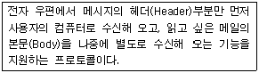
- POP
- SMTP
- IMAP
- MIME
(정답률: 65%)
9. 네트워크 구조에서 한 스테이션에서 다른 스테이션으로가는 경로가 여러 개 존재하는 구조로, 한 노드에서 고장이 생겼을 때 다른 우회 경로를 택할 수 있기 때문에 병목현상과 고장에 어느 정도 면역성이 있는 구조는?
- 그물형 구조(mesh topology)
- 별형 구조(star topology)
- 계층형 구조(tree topology)
- 수평형 구조(bus topology)
(정답률: 60%)
10. 다음은 윈도우즈 운영체제에서 데이터를 사용하기 위한 DSN에 대한 설명이다. 가장 옳지 않은 것은?
- DSN을 설정하기 위해서는 데이터원본(ODBC)에 등록해야 한다.
- 사용자 DSN은 현재 사용자만 접근가능하다.
- 시스템 DSN은 권한이 있는 모든 사용자가 접근가능하다.
- DSN은 Access 데이터베이스 파일만 사용할 수 있다.
(정답률: 60%)
11. 다음 중 웹 사이트 구축 절차를 순서적으로 가장 적절하게 나열한 것은?
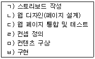
- ㄱ → ㄴ→ ㄷ→ ㄹ→ ㅁ→ ㅂ
- ㄹ→ ㅁ→ ㄱ→ ㄴ→ ㅂ→ ㄷ
- ㅁ→ ㄹ→ ㄱ→ ㄴ→ ㅂ→ ㄷ
- ㄹ→ ㅁ→ ㄴ→ ㄱ→ ㅂ→ ㄷ
(정답률: 70%)
12. 다음 중 ＜BODY＞ 태그의 속성과 그에 대한 설명으로 잘못된 것은?
- Link : 하이퍼링크 색
- Vlink : 방문한 사이트의 링크 색
- Background : 배경색
- Text : 글자 색
(정답률: 36%)
13. 다음 중 ( ) 안에 들어갈 말로 알맞은 것은?
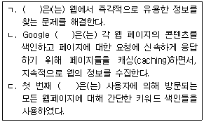
- 웹 페이지
- 온라인 채팅
- 웹 브라우저
- 검색엔진
(정답률: 79%)
14. 다음 설명과 관계가 있는 것은?
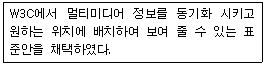
- XHTML
- SMTP
- SGML
- SMIL
(정답률: 59%)
15. 다음과 같은 형식으로 HTML 문서를 만들 때 ( )안에 들어갈 것을 순차적으로 바르게 나열한 것은?
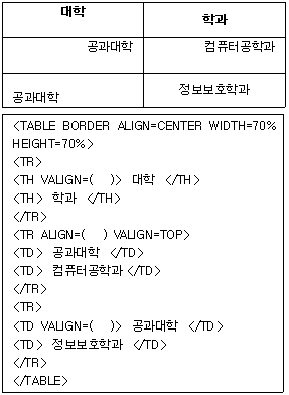
- CENTER, LEFT, TOP
- LEFT, CENTER, RIGHT
- TOP, RIGHT, BOTTOM
- MIDDLE, TOP, RIGHT
(정답률: 65%)
16. 일반적으로 검색엔진에서 연속된 두 개 단어로 된 구문 '봄 겨울'을 검색할 때 사용하는 가장 적절한 표현법은?
- 봄 and 겨울
- "봄 겨울"
- 봄 겨울
- 봄 or 겨울
(정답률: 59%)
17. 다음 중 HTML 태그가 아닌 것은?
- ＜DIV＞
- ＜BR＞
- ＜P＞
- ＜MAIN＞
(정답률: 85%)
18. ASP는 사용자가 웹페이지를 인터렉티브하게 사용할 수 있도록 고안된 기술인데, 다음중 ASP에서 사용하는 객체가 아닌것은?
- Request 객체
- Session 객체
- Application 객체
- Query 객체
(정답률: 47%)
19. 다음은 스타일 시트(CSS) 표현 방식 중 무슨 style을 나타낸 것인가?
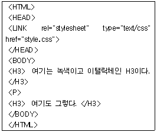
- Embedded Style
- Inline Style
- Heading Style
- Linked Style
(정답률: 65%)
20. 다음 중 다음 웹사이트의 구조와 설명이 바르게 짝지어진 것만 나열한 것은?
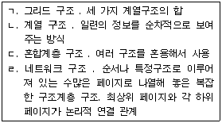
- ㄱ, ㄴ, ㄷ, ㄹ
- ㄱ, ㄷ, ㄹ
- ㄱ, ㄴ, ㄹ
- ㄴ, ㄷ
(정답률: 55%)
2과목: 전자상거래 일반
21. 다음 중 일반적인 구매 프로세스를 순서대로 적절하게 나열한 것은?
- 요구-견적-발주-납품
- 견적-납품-요구-발주
- 발주-견적-요구-납품
- 견적-요구-납품-발주
(정답률: 67%)
22. 다음 중 B2B의 설명으로 옳은 것은?
- 인터넷이 활성화되기 이전에도 보편화된 거래형태였다
- 인터넷 쇼핑몰은 B2B의 전형적인 형태이다.
- B2C에 비해 거래액이 적다
- 다양한 상품종류에 적은양의 거래가 이루어진다는 특징을 가지고 있다
(정답률: 40%)
23. 다음에서 물류의 목표를 달성하기 위한 원칙(4S 또는 3S 1L)을 모두 고른 것은?
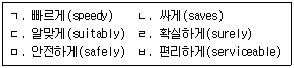
- ㄱ, ㄴ, ㄷ, ㄹ
- ㄱ, ㄴ, ㄹ, ㅁ
- ㄴ, ㄷ, ㄹ, ㅁ
- ㄷ, ㄹ, ㅁ, ㅂ
(정답률: 79%)
24. 다음 중 제3자 물류회사를 이용하는 경우 얻을 수 있는 이점으로 가장 적절한 것은?
- 물류활동에 대한 운영효율의 저하
- 고객과의 직접 면담을 통한 고충처리 가능
- 인적 비용 및 자본 비용 절감
- 물류시설 확대를 통한 자산증가
(정답률: 74%)
25. 다음은 텔레마케팅(TM:TeleMarketing)에 관한 설명이다. 가장 적절치 않은 것은?
- TM은 상품이나 서비스가 생산자로부터 소비자에게 전달되기 위해 행하는 광고, 선전, 조사 활동 등 모든 기업 활동에 전기 통신 미디어를 효과적으로 활용하여 수행하는 마케팅 활동이라 정의할 수 있다.
- TM 센터 구축의 목적은 고객 서비스를 강화하고, 창구 일원화로 이용 고객의 편리성을 높이고, 신속한 업무 처리를 할 수 있게 하며, 고객을 기다리기보다는 고객을 찾아가는 마케팅이 가능하다.
- TM은 TV, 라디오의 CM이나 신문 잡지 등의 매스매체를 이용하여 정보를 보내는 방법이다.
- TM은 대금 회수, 계약 갱신, 배달 통지, 고객 서비스, 판매 및 판매촉진 등에서 널리 활용되고 있다.
(정답률: 62%)
26. 다음 중 웹 트래픽을 증대시키는 요소와 가장 거리가 먼 것은?
- 도메인 이름
- 포탈에 등록
- 웹사이트의 컨텐츠
- 조직구조
(정답률: 46%)
27. 다음 중 기업이 인터넷을 이용하여 법인세나 취득세를 납부한다면 어떤 유형의 전자상거래로 볼 수 있는가?
- Government-to-Business(G-to-B)
- Business-to-Consumer(B-to-C)
- Business-to-Business(B-to-B)
- Government-to-Government(G-to-G)
(정답률: 84%)
28. 다음 중 기업간 전자상거래의 기대효과와 가장 거리가 먼 것은?
- 재고증가로 인한 자산의 가치 증가
- 구매시간과 비용의 감소
- 구매와 관련한 서류 처리 착오의 감소
- 거래의 투명성 제고
(정답률: 67%)
29. 다음 중 전자상거래를 통하여 판매되는 제품이나 서비스의 가격이 전통적인 상거래보다 저렴할 수 있는 근거로 가장 거리가 먼 것은?
- 투입되는 인력이 줄어든다.
- 물류 비용이 절감된다.
- 사무용품, 집기 등의 비용을 절감할 수 있다.
- 제품의 유통 비용을 절감할 수 있다.
(정답률: 37%)
30. 다음 중 전자상거래 발전에 따른 종합 물류 사업의 전망이라고 보기 어려운 것은?
- 물류업체의 분할
- 택배업의 급성장
- 전문물류업체의 역할 증대
- 정보시스템의 개발 및 이용확대
(정답률: 62%)
31. 다음은 전자상거래에서 사용되는 고객분석기법 중 무엇을 설명한 것인가?
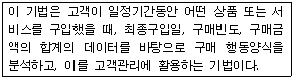
- FRAT기법
- RFM기법
- MCIF기법
- 고객특성분석
(정답률: 54%)
32. 전자상거래에서 결제는 비대면으로 이루어진다는 특징이 있고 이로 인해 전자상거래에서 결제가 제대로 이루어지려면 충족되어야 할 조건들이 있다. 이러한 조건으로 보기 어려운 것은?
- 무결성 (Integrity)
- 상호인증 (Authentication)
- 부인방지 (Non-Repudiation)
- 개방성 (Openness)
(정답률: 77%)
33. 다음 중 고객의 관점에서 전통적인 기존의 마케팅과 비교할 때 인터넷 마케팅이 갖는 특징으로 가장 올바른 것은?
- 고객들은 과거에 비해 더 많은 시장 정보를 보유하고 있다.
- 고객을 개인이 아닌 집단으로 생각한다.
- 고객의 관심에 대한 파악이 어렵다.
- 고객들으로부터의 피드백이 늦다.
(정답률: 85%)
34. 다음 중 디지털 상품을 대상으로 한 비즈니스 모델로 가장 적절하지 않은 것은?
- VOD(Video on Demand)
- 인터넷 서점
- MP3 음악 파일 제공
- 온라인 교육 프로그램
(정답률: 57%)
35. 다음 중 전자상거래로 대표되는 디지털 패러다임의 변화를 잘못 기술한 것은?
- 유통채널이 단순해졌다.
- 시간과 공간의 제약이 약해졌다.
- 과거에 고객에게 존재했던 기업에 대한 강한 협상력(bargaining power) 우위가 기업으로 옮겨갔다.
- 산업간 장벽이 해체되었다.
(정답률: 72%)
36. 다음 중 소비자와 기업 간의 전자상거래(B2C)에 대한 설명으로 틀린 것은?
- 기업이 고객에게 또는 고객이 기업에게 제품 및 서비스를 전달 또는 주문하는 수단으로서 전자상 거래를 사용하는 것이다.
- 가치창출이 이루어지는 활동으로, 주로 기업 내부적 차원에 초점을 맞춘 거래를 말한다.
- 고객지향적인 전자상거래가 활용 될 수 있다.
- 사이버 쇼핑몰을 개설해 전자적으로 상품과 서비스를 판매하는 유형이다.
(정답률: 86%)
37. 다음 중 온라인 소비자의 행동에 대한 설명으로 가장 보기 어려운 것은?
- 인터넷 사용자들은 관심영역의 정보를 탐색하는 과정에서 욕구를 불러일으키거나 창출하는 특정 자극을 만날 수 있다.
- 소비자는 인터넷을 이용하여 보다 빠르고 정확한 정보탐색을 할 수 잇다.
- 온라인 소비자들은 직접 대면을 하지 않기 때문에 구매 후 만족이나 불만족 등의 소비자 반응을 쉽게 알 수 없다.
- 소비자들의 구매와 관련된 지각된 위험은 인터넷을 통하여 제품관련 정보를 제공하는 등의 방법으로 상당부분 감소시킬 수 있다.
(정답률: 85%)
38. 다음 중 바람직한 웹 사이트 프로모션 방법으로 가장 적절하지 않은 것은?
- 대량 스팸 메일 발송
- 포털 사이트나 검색엔진에 자사의 사이트 주소 등록
- OFF-Line상에서의 웹사이트 홍보
- 배너광고
(정답률: 74%)
39. 다음은 인터넷으로 인한 유통구조의 변화에 대한 설명이다. 이 중 가장 적절하지 않은 것은?
- 기존의 굴뚝 산업(brick and mortar) 업체들도 인터넷 진출을 활발히 하고 있다.
- 인터넷의 도입으로 중간상을 배제한 생산자와 소비자의 직접거래가 용이하다.
- 인터넷의 등장으로 중간상에 대한 새로운 역할이 요구되고 있다.
- 인터넷의 등장으로 기존 유통업자들과의 갈등이 감소되고 있다.
(정답률: 92%)
40. 다음 중 전자상거래의 긍정적인 영향으로 가장 거리가 먼 것은?
- 고객니즈의 신속한 파악 및 대응
- 거래 비용의 감소
- 새로운 사업영역 확대
- 중간유통업체의 활성화
(정답률: 67%)
3과목: 컴퓨터 및 통신 일반
41. 해커들이 컴퓨터 시스템의 보안 예방책을 침입하여 시스템에 무단 접근하기 위해 사용되는 일종의 비상구를 무엇이라고 하는가?
- 클리퍼 칩
- 트랩 도어
- 엑세스 도어
- 부비 트랩
(정답률: 85%)
42. NetBIOS이름을 IP주소로 변환하는 방법 중에서 Windows에서 제공하는 WINS(Windows Internet Naming Service)에 대한 설명으로 다음 중 옳지 않은 것은?
- WINS클라이언트는 부팅시 WINS서버로 자신의 NetBIOS이름과 IP주소를 등록한다.
- WINS서버는 이미 등록되어 있는 NetBIOS이름과 충돌하는지를 확인하고 충돌이 발생하지 않으면 클라이언트의 NetBIOS이름과 IP주소를 등록한다.
- WINS클라이언트가 NetBIOS이름으로 통신을 시도하면 입력된 NetBIOS 이름에 대한 IP주소를 내부적으로 WINS 서버에 문의하게 된다.
- WINS서버가 NetBIOS주소로 대답을 하면서 실질적인 통신이 이루어진다.
(정답률: 46%)
43. 다음 중 전자메일 서버와 관련된 내용 중 옳은 것은?
- SMTP서버는 메일을 수신하는 서버이다.
- POP3는 메일을 송신하는 서버이다.
- 메일서버는 웹상에서 서비스 될 수 없다.
- SMTP와 POP3는 하나의 서버컴퓨터에서 구동 될 수 있다.
(정답률: 54%)
44. 다음 중 기억 장치에 대한 설명으로 옳은 것은?
- 캐시 메모리(Cache Memory): 전원이 꺼진 상태에서도 읽고 쓰기가 가능한 휘발성 메모리
- RAM: 기억장치의 용량을 보다 크게 사용하기 위한 것으로 디스크의 메모리를 주기억장치와 같이 사용할 수 있도록 하는 것
- 플래시 메모리: 플래시 EEPROM이라고도 하며, RAM처럼 저장된 정보를 변경하거나 ROM처럼 한 번 기억된 정보 유지할 수 있음
- 가상기억장치(Virtual Memory):CAM(Content Addressable Memory)라고도 하며 기억된 내용 일부를 이용하여 데이터에 직접 접근할 수 있는 메모리
(정답률: 73%)
45. 인터넷 보안 서비스가 아닌 것은?
- 기밀성: 암호화하여 도청 방지
- 무결성: 메세지 변조를 막는 무결성
- 인증: 상호 식별 가능한 인증
- 예방성: 도청을 예방한다.
(정답률: 80%)
46. Sun사에 의해 개발된 NFS(Network File System)에 대한 바른 설명과 가장 거리가 먼 것은?
- 여러대의 호스트에 동일파일을 설치할 경우 사용
- 서버의 콘솔계정을 일반 사용자가 획득
- 원격 호스트상의 파일 시스템 억세스 가능
- NIS(Network Information Service)와 같이 사용되는 경우가 많다.
(정답률: 59%)
47. 다음은 전자상거래 시스템 구축 시 고려해야 할 점들이다. 이 중 운영체제(OS) 선택에 영향을 가장 적게 미치는 요소는?
- 동시에 접속하는 사용자 수는 얼마로 예상 되는가?
- 전자상거래 시스템이 서비스하는 상품의 수는 얼마로 예상 되는가?
- 상품의 웹컨텐츠를 HTML과 XML중 어느 것으로 할 것인가?
- 사용하게 될 전자상거래 구축 소프트웨어의 종류는 무엇인가?
(정답률: 37%)
48. 다음 중 컴퓨터 바이러스의 유형에 대한 설명으로 가장 거리가 먼 것은?
- 부트 바이러스는 컴퓨터가 처음 가동되면 하드 디스크의 가장 처음 부분인 부트섹터에 위치하는 바이러스로 메모리에 상주한다.
- 파일 바이러스는 실행 가능한 프로그램에 감염되는 바이러스로 감염대상은 COM, EXE, SYS 파일 등 이다.
- 부트/파일 바이러스는 부트섹터와 파일에 모두 감염되는 바이러스로 대부분 피해가 크며 스스로 복제가 가능하게 설계된 바이러스이다.
- 매크로 바이러스는 마이크로소프트사에서 개발된 모든 프로그램에서 작성된 파일을 감염시킨다.
(정답률: 70%)
49. 다음 중 TLD(Top Level Domain)에 대한 설명으로 틀린 것은?
- 최상위 도메인으로 도메인 이름으로 볼 때 제일 우측에 있는 부분이다.
- 처음에는 com, net등의 일반도메인이 있었다.
- 2000년 biz, info 등의 새로운 일반도메인이 추가되었다.
- 250여개의 국가도메인은 여기에 포함되지 않는다.
(정답률: 74%)
50. LAN기술에 대한 IEEE802표준 방법 중 다음에 해당되는 방법은?
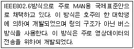
- FDDI
- Token Ring
- CSMA/CD
- DQDB
(정답률: 47%)
51. 다음 중 인터넷의 표준언어인 HTML을 개선한 것으로 문서의 구조도 표현할 수 있어 전자상거래 등에서 유용한 언어로 대두되고 있는 언어는?
- XML
- JSP
- SGML
- Java
(정답률: 86%)
52. 다음 인터넷의 도메인 중 최상위 도메인(Top level domain)에 해당하지 않는 것은?
- KR
- AC
- COM
- GOV
(정답률: 50%)
53. 다음 중 인터넷정보서비스(IIS)에서 제공하는 서비스가 아닌 것은?
- FTP 서비스
- 메일 서비스
- 뉴스 서비스
- 사용자 계정 서비스
(정답률: 84%)
54. 다음 중 데이터 전송의 경우에 발생하는 잡음의 종류로 올바르지 않은 것은?
- 감쇠
- 충격
- 열
- 상호변조
(정답률: 42%)
55. 다음은 머천트(Merchant)서버의 어떤 구성요소를 말하는가?
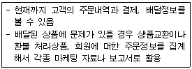
- 장바구니 관리 프로그램
- 고객관리 프로그램
- 프로모션 관리 프로그램
- 관리 및 정산 프로그램
(정답률: 39%)
56. 다음의 URL 형식 중 밑줄 친 부분을 무엇이라 하는가?
- 프로토콜
- 디렉토리 이름
- 인터넷 주소
- 파일이름
(정답률: 77%)
57. 다음의 ( ) 안에 들어갈 알맞은 것은?
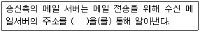
- SMTP(Simple Mail Transfer Protocol)
- DNS(Domain Name System)
- Intranet
- Internet
(정답률: 알수없음)
58. 다음 중 TCP/IP 프로토콜에서 TCP계층의 서비스와 UDP계층의 서비스에 대한 비교가 올바로 된 것은?
- (TCP) 연결형 서비스 - (UDP) 비 연결형 서비스
- (TCP) 수신순서가 송신순서와 다름 - (UDP) 수신순서가 송신순서와 항상 다름
- (TCP) 오류제어와 흐름제어가 거의 없음 - (UDP) 반드시 오류제어와 흐름 제어 수행
- (TCP) 멀티캐스트 전송에 적합 - (UDP) 유니캐스트 전송에 적합
(정답률: 54%)
59. 다음 중 입출력 장치에 대한 설명으로 잘못된 것은?
- 입력 장치에는 모니터, 디지타이저, 스캐너, 마우스 등이 있다.
- 화면에 그리거나 표시할 수 있는 가장 작은 단위는 픽셀(Pixel)이다.
- 입력장치 기능: 문자, 숫자, 도형, 음성 등을 컴퓨터가 처리할 수 있도록 2진 정보로 바꾸어 주는 장치.
- 출력장치 기능 : 주기억장치에 기억된 2진수 형태의 데이터를 우리가 이해할 수 있는 형태로 바꾸어 출력해 주는 장치.
(정답률: 62%)
60. 다음 중 전자상거래와 관련된 용어에 대한 설명으로 옳지 않은 것은?
- EC : Electronic Commerce로 전자상거래를 뜻한다.
- CALS : Commerce At Light Speed의 약자로 21세기에 새로 등장한 개념이다.
- EDI : 전자문서교환을 뜻하며 Electronic Data Interchange이다.
- E-Business : 인터넷 경영을 뜻하며 전자상거래 보다 광의의 개념이다.
(정답률: 54%)